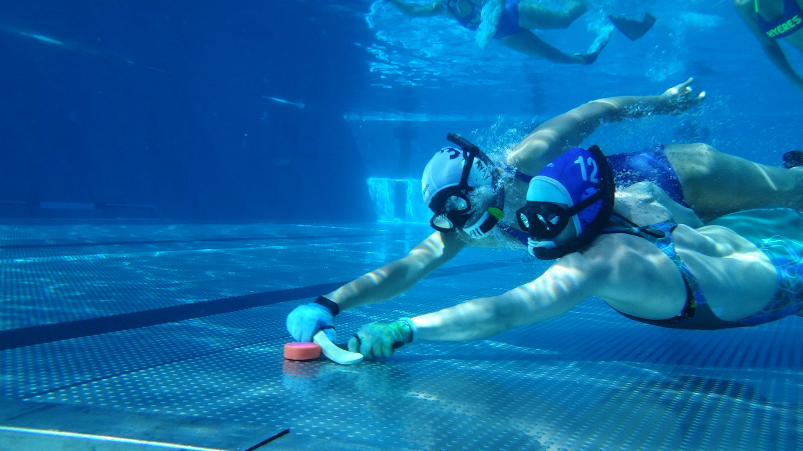
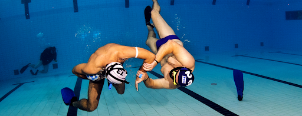
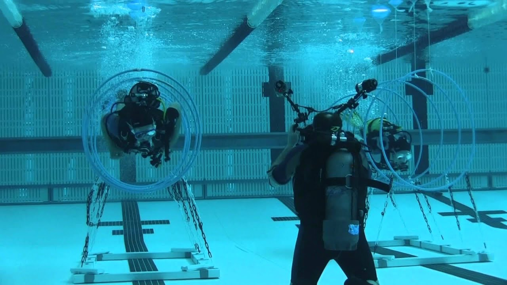

Les sports subaquatiques désignent l’ensemble des disciplines qui se déroulent sous l’eau. Du hockey subaquatique en passant par le tir sur cible subaquatique, quelques disciplines offrent la possibilité de pratiquer des sports en apnée. Divertissants et ludiques, ces sports subaquatiques permettent de sortir du cadre traditionnel de la plongée en apnée, souvent jugé trop rigoureux.
Le hockey subaquatique
Le hockey subaquatique est né dans les années 50, en Angleterre. Cette discipline arrive pour la première fois en France, à Montauban, en 1968. Le premier championnat de France qui a lieu en 1982, à Reims, marque le réel début du hockey subaquatique en France. D’ailleurs, la France est l’une des meilleures nations dans cette discipline avec trois titres de champion du monde à son actif 1998, 2008, 2013. En constante évolution technique depuis sa création, le jeu se déroule, en apnée, à l’intérieur d’une piscine, entre 2 et 4 mètres de profondeur. Le hockey subaquatique met face à face deux équipes composées de 6 joueurs et de 4 remplaçants. Le but du jeu est de faire progresser un palet d’environ 1,3 kg, par le biais d’une crosse, jusqu’au but adverse en usant de passes. Une rencontre de hockey subaquatique dure généralement 30 minutes deux mi-temps de 15 min sur un terrain de 20 à 25 mètres de longueur sur 12 à 15 mètres de largeur. Trois arbitres, dont deux dans l’eau, sont présents pour gérer le match et signaler les fautes.
Le rugby subaquatique
Appelé aussi “underwater rugby”, ce sport a vu le jour en Allemagne dans les années 1960. Reconnu en tant que sport subaquatique dans les années 70, ce sport récent souffre de son absence de médiatisation. Paradoxalement, le rugby subaquatique, n’a rien à voir avec le rugby classique. Une équipe de rugby sous l’eau est constituée de 6 joueurs et de 6 remplaçants. Les deux équipes s’opposent le temps de 2 périodes de 15 minutes ; l’objectif étant de marquer plus de points que son adversaire en déposant la balle dans le but adverse. Les joueurs peuvent se déplacer dans une aire de jeu mesurant entre 12 et 18 mètres de long, 8 et 12 mètres de large et entre 3.5 et 5 mètres de profondeur. Quant au ballon, il a une forme totalement différente de celui utilisé lors d’un match de rugby classique. Il est de forme sphérique et ressemble beaucoup à un ballon de handball. Par ailleurs, celui est rempli d’eau salée afin qu’il ne puisse pas flotter. D’autre part, comme pour le hockey subaquatique, trois arbitres dont 2 dans l’eau, veillent au respect des règles. Celles-ci, sont d’ailleurs, pour les principales d’entre elles, très simples : Le ballon ne doit jamais sortir de l’eau, Il est interdit d’user de violence mordre ou étrangler par exemple ou encore de s’agripper à l’équipement d’un autre joueur.
La plongée sportive en piscine
La plongée sportive en piscine, ou “PSP” est une discipline qui s’est développée à la fin du XXe siècle. Elle a été créée par Marifé Abad, à Zaragoza en Espagne. Ce sport a été officiellement reconnu, en 2008, par le comité directeur de la Confédération Mondiale des Activités Subaquatiques. En Octobre 2014, la FFESSM crée la commission Plongée Sportive en Piscine et commence à organiser des compétitions.
